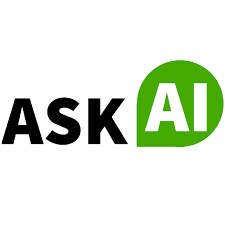
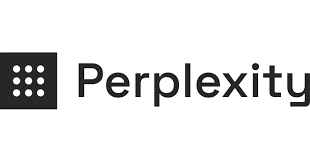

Browse 7+ Best Research tools Tools
CHAT GPT AI

ChatGPT AI is a state-of-the-art language model developed by OpenAI. It represents a significant advancement in natural language processing and
understanding. ChatGPT is designed to engage in conversations, answer questions, generate text, and assist with a wide range of tasks by processing
and generating human-like text based on the input it receives. It has been trained on a diverse dataset from the internet, which allows it to provide
information, generate creative content, and carry out various language-related tasks. ChatGPT AI has found applications in customer support, content
generation, and as a virtual assistant, making it a versatile tool for both businesses and individuals seeking to harness the power of AI to enhance their interactions and productivity.
CHAT GPT AI.
ASK AI
 ASK AI is an advanced AI search engine developed by AI Search Inc. It is designed to provide users with accurate and comprehensive answers to their
questions by utilizing the most authoritative and factual sources available. ASK AI uses a combination of natural language processing, machine learning,
and data analysis techniques to understand and interpret user queries, search through vast amounts of information, and deliver relevant and reliable answers.
With its advanced algorithms and extensive database of trusted sources, ASK AI aims to provide users with the most up-to-date and accurate information on a wide
range of topics. It is constantly evolving and improving its capabilities to ensure that users receive the best possible answers to their queries.
ASK AI.
PERPLEXITY AI
 perplexity AI model is more proficient at understanding and generating coherent and contextually relevant text, making it a valuable metric for evaluating the
performance of various NLP applications and algorithms. It helps researchers and developers fine-tune models and improve their capabilities in understanding and
generating human-like language.
PERPLEXITY AI.
PAPERTALK.IO
Papertalk.io is an AI-powered platform that offers a range of features that enhance the learning experience for students and teachers PAPERTALK.IO.
JASPER AI
Papertalk.io is an AI-powered platform that offers a range of features that enhance the learning experience for students and teachers JASPER AI.